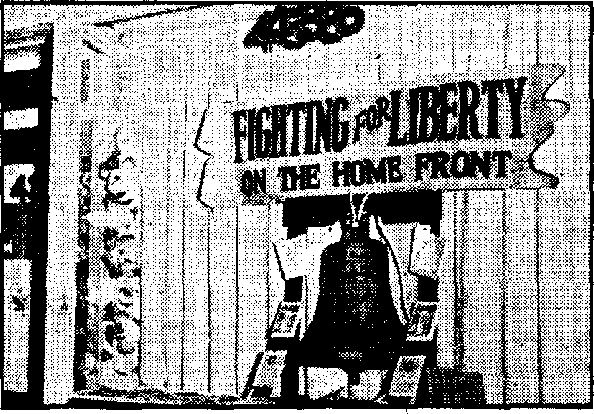

Notandum
Suppressing Historical Truth. '
The Cow’s Heels Boost “Dear Eddie”
“Thy Word Is Truth”
The Truth About Jehovah’s witnesses
Paradise Lost—Paradise Regained
Kingdom Blessings in Mississippi
Really Studying the Bible at Home
The Japanese Soldiers in Burma
The Beautiful and Hardy Goldfish
Odd Fish in New York’s Aquarium
Four-footed Blessings on American Farms
Advertising Spiritism—Demonism
Presenting “This Gospel of the Kingdom”
Consuming a Lake of Water Daily
Published every other Wednesday by WATCHTOWER BIBLE AND TRACT SOCIETY, INC. 117 Adams St., Brooklyn, N. Y., U. S. A.
OFFICERS
President N, H. Knorr
Secretary W. E, Van Amburgh
Editor Clayton J. Woodworth
Five Cents a Copy |1 a year in the United States |1.25 to Canada and all other countries
NOTICE TO SUBSCRIBERS ‘
Remittances: For your own safety, remit by postal or express money order. When coin or currency Is lost In the ordinary mails, there is no redress. Remittances from countries other than those named below may be made to the Brooklyn office, but only by International postal money order.
Receipt of a new or renewal subscription will be acknowledged only when requested. Notice of Expiration Is sent with the journal one month before subscription expires. Please renew promptly to avoid loss of copies. Send chance of address direct to us rather than to the post office. Your request should reach ur at least two weeks before the date of Issue with which it Is to take effect. Send your old as well as the new address. Copies will not be forwarded by the post office to your new address unless extra postage Is provided by you.
Published also in Greek, Portuguese, Spanish, and Ukrainian,
OFFICES FOR OTHER COUNTRIES
England 34 Craven Terrace, London, W. 2
Australia 7 Beresford Road, Strathfield, N. S. W.
South Africa 623 Boston House, Cape Town
Mexico Calzada do Melchor Ocampo 71, Mexico, D, F. Brazil Caixa Postal 1219, Rio de Janeiro
, Argentina Calle Honduras 15646-48, Buenos Aires
Entered as second-class matter at Brooklyn, N. Y.( under the Act of March 3, 1379.
“A World Possessed”
♦ We are living in a crazy world, a world possessed. Our Puritan ancestors might well have called it a world possessed of the Devil. For evil and violence and heart-rending anxiety seem to. Haye gained the upper hand for the time being, so that even the most Chris- -tian and the most peace-loving nations on earth are caught in a seething whirlpool.
The pillars of society have begun to shake. The foundations of truth and hu-tnanity, of reason and justice, which we thought of enduring character and of lasting value, sometimes seem to he disintegrating. At times we feel as If the very ground under our feet were trembling, and, we no longer know on what to build or where to take our stand. The future weighs upon us as a terrible, incomprehensible burden under which nobody dares to plan and scarcely anyone dares to look ahead. Thoughts of the future darken the high hopes of the young, and they fill with gloomy forebodings the eventide of our elders.
What is going to happen? How is this crisis in human affairs going to end? Will it pass, as other great crises have gone by? Or are present events merely harbingers of still more cataclysmic happenings ? What can we do to prevent the further growth of the evil? Who is responsible for these disasters? and what can yet be done to stay the spread of the blight that has come to darken the skies of this entire generation?
These are the thoughts and questions that harrow and torment us. Nor do they any longer torment us solely in the empty hours of the night, when the flame of life burns low and the surrounding gloom becomes peopled with all kinds of fantastic images and nightmares. Today the facts stare us in the face, and our feelings of disaster rest on sober judgment and observation.—Pierre van Paassen, in Woman's Day, August, 1942.
“And in His name shall the nations hope,”—Matthew 12:21, A.R.V.
Volume XXIV Brooklyn, N. Y,, Wednesday, July 7, 1943 t Number S21
Public Schools Destroyed
IF SOME group of persons should dynamite, destroy or forcibly close all of the public schools throughout the nation, immediately that group of criminals would be apprehended, prosecuted, and convicted of terrible crimes against the people and state. By such an act the criminals would so injure an essential stratum of democracy as to impair the strength of the nation as deeply as could be done by a large group of invading saboteurs let loose to destroy all the industrial plants operating in connection with the army and navy. During the past ten years representatives of a Fascist organization operating in America have actually torn down the public-school system of the nation. This they have done by control of and gradual change of the course of study, which has sandbagged and sabotaged the public-school system established at great cost and through great hardship during the generations past. You ask: Who? How? When? Where ?
On April 4, 1943, honest Americans were startled and shocked by a report of the New York Times of that date showing the result of its nation-wide survey of first-year college students’ knowledge of American history. The survey showed the height of ignorance concerning fundamentals of American history, the Bill of Bights, and elementary geography.
Seven thousand students in thirty-six colleges and universities ip all parts of the nation were examined. A large majority of those examined could not identify such names as Abraham Lincoln, Thomas Jefferson, Andrew Jackson, or Theodore Roosevelt. Twenty-five percent did not know that Abraham Lincoln was president of the United States during the Civil War. Many students in the South answered that Jefferson Davis was president during the Civil War. Others listed as filling the office during that period were: Woodrow Wilson, Ulysses S. Grant, Theodore Roosevelt, William H. Taft, Herbert Hoover, Andrew Jackson, and Warren G. Harding. Thirty percent of the students did not know that Woodrow Wilson was president during the last World War. Other men listed as president during that time ranged from Abraham Lincoln to Calvin Coolidge. Thomas Jefferson, one of the authors of the United States Constitution, was said to be president of the Confederacy, founder of The Saturday Evening Post, a Salvation Army worker; and others thought he was the discoverer of electricity. His contemporary, Alexander Hamilton, was declared to be a British officer, founder of Poor Richard's Almanac, traitor, admiral, and inventor of the telephone; and others listed him as being historically famous because of his watches.
Bill of Rights Neglected
■ The Bill of Rights securing many freedoms including those named in the First Amendment, to wit, freedom of speech, freedom of press, and freedom of worship, was erroneously described as securing freedom to labor, freedom from no jobs, freedom of politics, freedom to buy and sell, freedom of way of life, and freedom of protection. The rights included
as contrary to the document were: right to revolution, right' of 'ownership of property, right for no prohibition, right „ to' enter business, right to livelihood, right to no slaves, right to impeach the president. One student said the Bill of flights gave the “white people in the South the right to lynch Negroes”. One entire page of the newspaper was devoted to naming samples of the thousands of errors and misstatements of the students as to fundamentals.
Concerning this survey the New York Sun editorial of April 6, 1943, says:
And how, without knowing something about Nullification, the Homestead Law, the Missouri Compromise, the Dred Scott decision, the Legal Tender eases, can any boy or girl have anything but the most infantile conception of oiir system of constitutional government? Perhaps the most disturbing thing about the Time's findings is that it cuts the ground from so many of our assumptions. We talk glibly of the American way of life, of the American tradition, of the evolution of democratic self-government. But if these findings are true, a generation has arisen that knows little indeed about any of these things. What have the teachers—and parents—been doing that this field should lie so fallow ? How can we be astonished if we shall awake some morning to discover that it was already prepared for the sowing of all the dangerous isms that ignorance, self-interest and prejudice could contrive to scatter as tares seeded in the night? Heretofore we have never had to worry seriously over the future of a republic safely consigned to men and women who have known whence it came and whither it has been traveling. "What shall we hope from intrusting it to those for whom its past is obscurity and its present confusion?
So alarming was this report that alert senators in Washington turned from wartime duties to introduce official resolution in the Senate on April 6, 1943, condemning the disgraceful condition of ignorance in American schools. Senator Joseph F. ’ Guffey, of Pennsylvania, offering the resolution, said:
A further cause for ignorance lies in the fact that for the past decade or more the enthusiasts of the so-called “social” studies have convinced many of our educators that these subjects should be taught in place of history, insisting that social trends rather than real historical facts were sufficient for understanding our nation’s history. . . . youths of 15 to middle-age citizens with little knowl-. edge and even little interest concerning the founders and builders of our country whose aims and ideas we are now attempting to safeguard for ever. ... At the same time we all feel a deep sense of humiliation to realize that our students are not only being improperly taught but that this teaching must be due to the exceedingly poor textbooks. . . . Mr. Guffey said he hoped every other service branch was following the plan and that this would challenge educators generally to write “accurate textbooks”.
The most significant statement made by this honest American before the Senate was, to wit, "It, is a well-known fact that State legislatures have been interested in deleting chapters and statements from history books at the insistence of certain powerful groups which are unwilling to have the public know the truth.”
With these indictments of disgrace returned and filed against the American ' school system’s deficiency of education the true American is greatly alarmed. When, in June, 1942, the Times published a survey showing that thousands of American colleges were not requiring students to study history, United States Supreme Court Justice Jackson, in a public address before the Texas Bar Association on July 3,1942, deplored the notorious condition. He said:
On this eve of the 166 th anniversary of the Declaration of Independence some unhappy truths are self-evident. . . . The survey was summarized in the issue of the Times of June 22, 1942. . . . This apathy of our intellectuals toward the dramatic struggle on this continent to work out a formula that would reconcile individual freedom with effective government may tend to confirm the Nazi taunt that the fires of democratic enthusiasms are burned out; that democracy is supported by a formal loyalty without virile inward conviction ; that our. real first concern is not for our ideals but for our material profits and prosperity. . . . History is to a people what memory is to an individual. . . .
The nation proudly boasts of the finest publie-school system in the world. It has the highest-paid teachers, and the greatest facilities for learning and advancement. The nation has the largest resources and greatest wealth of any nation. What strange, insidious disease has stalked upon and overcome the nation? What alien institution has hamstrung and shackled the efforts of generations of toil, work, planning, development and improvement in the many educational facilities for the-children of the nation? The astonishing and disgraceful report is no surprise to the readers of the columns of this magazine, whose pages have frequently shown that the public schools suffer from inadequate fundamental education. This magazine has frequently established proof that the schools have turned from teaching the truth and spirit of American history to compulsory regimentation of the pupils through practice of ceremonies the meaning of which is not understood by the majority of the students. Thousands upon thousands of American school chib dren have been expelled from schools throughout the land because the teachers have refused to recognize their conscientious objections to participation in such flag-salute ceremonies forbidden-by Exodus 20:3-5. The ignorance test conducted by the newspaper is only one of the many circumstances and proofs that we are now living in the last days described by a prophet thus: "For, behold, the darkness shall cover the earth, and gross darkness the people.” (Isaiah 60:2) Christ Jesus describes them thus: "Having eyes, see ye not? and having ears, hear ye not? and do ye not remember (Mark 8; 18) The faithful apostle Paul describes the condition thus: “In whom the god of this world hath blinded the minds of them which believe not, lest the light of the glorious gospel of Christ, who is the image of God, should shine unto them."—2 Corinthians 4:4.
The People Must Be Informed
For a comparatively short period of time the people in the United States of America have enjoyed freedom of liberty above the people of other nations because through the Constitution “we, the people of the United States”, were declared to be the sovereign power or rulers. In order to exercise their sovereign power to rule, the people must be intelligently informed and educated in their duties, rights and privileges as citizens of a democracy. In 1786 Jefferson wrote to Washington: “It is an axiom in my mind that our liberty can never be safe but in the hands of the people themselves, and that, too, of the people with a certain degree of instruction.” In 1787 he wrote: "Above all things-1 hope the education of the common people will be attended to. Educate and inform the whole mass of the people. Enable them to see .that it is to their interest to preserve peace and order, and they will preserve them. They are the only sure reliance for the preservation of our liberty.” Washington in his message to Congress in 1790 said: “Knowledge is in every' country the surest basis of public happiness. In one in which the measures of the government receive their impression so immediately as in ours, from the sense of thj| community, it is proportionally essential.” Madison wrote: “A popular government without popular information or the means of acquiring it, is but a prologue to a farce or a tragedy, or perhaps both. . . . The best service that can be rendered to a country, next to giving it liberty, is in diffusing the mental improvement equally essential to the .preservation and enjoyment of that blessing.”1
Opposing this declared need of people in a democracy for continued education t and enlightenment on all subjects is a * giant totalitarian organization that advocates the principles of darkness and oppression—the Roman Catholic Hierarchy of Vatican City, Italy, operating for world conquest and domination in partnership with Hitler, Mussolini and Satan the Devil. Such dictator institution believes in education only for the ruling class, and that the common people should not be educated, but be kept in ignorance, in order that they may never learn that there is such a thing as liberty of the people. Ignorance and blindness aids suppression and tyranny. Official proclamations and publications of the Roman Catholic organization brand it as public enemy number one to the principles of democracy and the nations advocating the ‘Tour Freedoms”. Let that organization be judged by its own words. Pope Leo XIII codified the official views of the cult condemning the democratic principle sovereignty of the people. In his encyclical letter Immortal? Dei, November 1, 1885, among other things, he states:
Accordingly, it has become the practice and determination [in democracies] under this condition of public polity (now so much admired by many) either to forbid the action of the Church altogether, or to keep her in check and bondage to the State. Public enactments are in great measure framed with this design. The drawing up of laws, the administration of State affairs, the godless education of youth, the spoliation and suppression of religious orders [Society of Jesuits], the overthrow of the temporal power of the Roman Pontiff, all alike aim at this one end—to paralyze the action of Christian institutions, to cramp to the utmost the freedom of the Cath-
1 The Encyclopedia Americana, 1942 ed., Vol. 6, page 706.
olic church, and to curtail her every single prerogative. ...
The sovereignty of the people, however, and this without any reference to God, is held to reside in the multitude; which is doubtless a doctrine exceedingly well calculated to flatter and to inflame many passions, but which lacks all reasonable proof, and all power of insuring public safety and preserving order. Indeed from the prevalence of this teaching, things have come to such a pass that many hold as an axiom of civil jurisprudence that seditions may be rightfully fostered. For the opinion prevails that princes are nothing more than delegates chosen to carry out the will of the people; whence it necessarily follows that all things are. as changeable as the will of the people, so that risk of public disturbance is ever hanging over our heads. , , . So, too, the liberty of thinking, and of publishing, whatsoever each one likes, without any hindrance is not in itself an advantage over which society can wisely rejoice. On the contrary it is the fountain-head and origin of many evils. . . . Doctrines such as these, which cannot be approved by human reason, and most seriously affect the whole civil order, our predecessors the Roman Pontiffs (well aware of what their apostolic office required of them) have allowed to pass uncondemned. . . .1 2 [Bracketed words added]
This ancient subversive doctrine of “the church” has never been overruled or disclaimed, but, on the contrary, it has been published as an official expression of the Hierarchy, in 1937, and circulated for general use throughout the United States.
The same pope, in his encyclical Noblissima, among other things, said: “The Church has over and over again loudly condemned those schools which are called Mixed or Neutral, warning parents to be careful in a thing so momentous.” The Catholic World for April 1871, speaking for the pope, condemns public education thus:
Education is the American hobby— regarded, as uneducated or poorly educated people usually regard it, as a sort of panacea for all the ills that flesh is heir to. ... We do not indeed prize as highly as some of our countrymen appear to do the ability to read, write and cipher. Some men are born to be leaders, and the rest are born to be led.
- The best ordered and administered state is that in which the few are well educated and lead, and the many are trained to obedience, are willing to be directed, content to follow, and do not aspire to be leaders. . . , We believe that the peasantry, in old Catholic countries, two centuries ago, were better educated, although for the most part unable to read or write, than are the great body of American people today.2
The Catholic New World, official organ of the archdiocese of Chicago, issue of April 16, 1904, page 10, says:
Catholics as a body have offered a passive resistance to the school laws all over the country. The better and most religious portion of them have desired a radical change in these laws, and they are getting ready to make the most strenuous efforts to effect such a change.
The American public-school system had its beginning in the Colonial states of New England and is in a sense an outgrowth of the Reformation and Protestant rebellion against the Roman Catholic Hierarchy, The' Puritans who settled along the New England coast were determined that children should receive sufficient education to insure their ability to read the Bible. When it became plain that the parents were neglecting their duty of thus teaching and educating the Children the Colony of Massachusetts passed its famous Law of 1642 making it the duty of town officials to determine if children were being taught “to read and understand the principles of religion and the capital
■ 2 Rev. Isaac J.- Lansing, of Worcester, Mass., Romanism and the Republic (1896), pp. 233-234. laws of the country”. When the Constitution was adopted no provision was made for a national system of education, but such was left to the control and discretion of each state. A long period of time elapsed before the development of public’opinion was sufficient to require the establishment and maintenance of public schools. The people did not lose sight of the importance of an educated public as the backlog of democracy.
During the early days of the republic the South did not keep in step with the progress of public education and compulsory education. The conditions in that section of the country were entirely different. The people had -been taught to believe the Roman Catholic doctrine that only the rulers should be educated. Therefore only the children of the rulers and plantation owners in the South received schooling under tutorship of the. Jesuits and moneyed class. Education for the common people at public expense, or free public schools, was regarded as a form of public charity to be shunned and avoided by respectable people. “The tutor in the home, education in small private and select pay schools or education in the mother country for the sons of the well-to-do planters, were the prevailing methods adopted among the wealthier people, while the poorer classes were left with only such advantages as apprenticeship training and the few pauper schools of the time might provide.”3 -
Before the Civil War Massachusetts and New York were the only states to have compulsory education. Following the said war, which had a liberal influence upon the country, there was a general development of the public educational systems in the several states.
With the passing of time and the growing influx of a large foreign population speaking many different languages, being of different races and
different creeds, it became increasingly apparent that more states would have to enforce compulsory education to avoid certain ignorance, barbarism, indolence, and sure crumbling of democracy. Accordingly state after state passed such j compulsory education laws “as.; were 4 necessary7, and gradually7 the settled policy became that the education of the general public and their children was a state function and that public policy required the maintenance of public schools.' When these facilities became free to every7 child the states passed laws which made it compulsory to attend such public; schools or some private school of equal facilities. The laws are based on the proposition that the welfare of a democracy, as contrasted with dictatorship or totalitarian rule, depends greatly upon an educated citizenship able to read and write and understand the privileges, duties and obligations of citizenship. There is now an effective compulsory7 attendance law upon the statute books of every7 state in the Union except Mississippi, which provides for local option with each county as to whether or not there will be compulsory attendance in schools.
Every person with any self-respect and a desire to live a normal life and discharge his responsibilities to his fellow man and Almighty7 God will desire to receive a normal education in the fundamentals of history7, reading, writing,-arithmetic, and other subjects taught in the schools. Without the knowledge of these things one cannot do business and cannot increase in the learning of other necessary7 things. A Christian desires and needs a learning in these things as well as does the nonChristian. The compulsory7 education law is therefore a proper requirement of the law of the land which must be complied with by all persons, Christians and non-Christians, under the principle of 'rendering unto Caesar the things that are Caesar’s’. Such compulsory education laws du not violate the law of Almighty God nor conflict therewith except when the state or teachers attempt to compel or coerce the children to engage in religious and political ceremonies contrary to their conscience. When such children who have objections to such ceremonies can attend such public schools ■without being forced to comply with such ceremonies the children should attend and learn the fundamentals of the “three R’s” and teach their fellow students the law of Almighty7 God. This Christian attitude is not supported by the Roman Catholic, Hierarchy7, which organization bitterly opposes the receiving an education in the public schools by the children of the “church”.
Another fundamental reason why the children should be educated concerning their legal rights and duties in a nation is that they will know7 how to avoid being cheated by7 rulers who usurp power and authority to the denial of their hard-won liberties. It is insisted that the children learn arithmetic so that sharpers may7 not short-change them out of hard-earned dollars; likewise the people should teach the children the Bible in their own home so as to prevent the lying, thieving, sly7 clergy of both Protestant and other denominations from cheating them out of the opportunity to acquire life everlasting in God’s kingdom. It is contrary to the natural law and the law of Jehovah God for a parent to transfer his personal responsibility in teaching the child the Bible to some priest, nun, preacher, Sunday-school teacher, tutor, or any other person. This responsibility cannot be escaped by the parent. The Roman Catholic Hierarchy has made deep inroads in obtaining exclusive authority to educate the Catholic children, and that organization has slyly7 and greatly impaired the effectiveness and usefulness of the public schools as a means of education. This has been done in keeping with the conspiracy to carry out the encyclical of Pope Leo XIII.
-The education of the masses through the public schools has been the bulwark of democracy and maintenance of the people’s sovereign power. Education in free public schools has contributed more to the progress, prosperity, success and enlightenment of the United States than any other one thing. It has been the principal means of preservation of the form of government. Free public education has afforded to the poor and weak an opportunity to learn equal to that of the rich and wealthy. The mind of the general public enlightened in the fields of science, art, engineering, electricity, etc., has stirred them on from discovery to discovery to jump ahead in these fields in advance of all other nations on earth. The swift progress, growth and development of the youthful United States of America to one of the leading world powers with a liberal form of government has greatly enraged the Roman Catholic Hierarchy. In other lands, in the Catholic nations, education has been the prerogative only of the wealthy. The masses of the people remained under a pall of ignorance from the day of their birth to the time of death; a condition that has done more to hold back such nations than any other thing.
The Hierarchy Jias realized that it would be folly to start an outright rebellion against public education and free schools, because public opinion among the non-Catholics, the majority, has been for free' public schools. To accomplish their nefarious designs against free public schools the Vatican cult has employed a more certain, deadly, stealthy, sneaking and contemptible way of impairing the public schools. That has been done by putting its agents into control thereof throughout the nation by means of political power of appointment to office. By means of control of the public press and frightening so-called ‘Trotestants” into submission and fear of political extinction in the event of protest against its action the Hierarchy has been ■able to conceal its nefarious action and censorship of the textbooks of the public schools. Excuses of various kinds are offered, but no one dares disclose the truth that the Hierarchy, through pressure upon schools, editors, publishers, and textbook authors, has been able to change and blot out incidents of history. Those that could not be changed have been banned from the public schools by boycott and pressure methods. Through advocating the “good neighbor” policy with the so-called “Protestant” clergy the scheme has Completely succeeded. The results of the conspiracy of the clergy were announced through the New York Times about two months before the above survey on ignorance of history. On February 4, 1943, that paper published a report, on pages 25 and 27, headed, “10-Year Drive Cuts Bias in Textbooks.” “Bias” is used as the excuse for tampering with the pages of history. The article says, among other things:
A ten-year campaign sponsored by educational leaders representing Protestant, Catholic and Jewish groups lias proved successful in eliminating from the public, private and parochial school textbooks of the United States virtually all passages regarded as biased from the standpoint of race or religion, it was learned yesterday. Clergymen and educators, working quietly, have succeeded in changing the approach’toward racial and religious questions taken by textbook writers. ... A generation ago, Dr. Johnson added, the American high school, college and church school textbooks included a considerable number of ideas conducive to intolerance. . . . As a result Protestant curriculum materials have been analyzed, objectionable materials removed, many new materials to foster goodwill put in use, with others in various stages of preparation, and various major denominations are making intercultural education a major responsibility of their educators.
This makes it plain that all anti-Catholie references in books concerning the Reformation, the Inquisition, or any other facts of history commonly known to the “founding fathers” of the nation and establishing who the people’s enemies are, have been completely eliminated from textbooks. This denies enlightenment to the mind of the people; <and thus the supporting column of democracy, free public education and its value, are being gradually chiseled away. The disastrous results are obvious to all.
It is plain that the Hierarchy has succeeded in completely sabotaging the value of history, which Justice Jackson says is “to a people what memory is to an individual”. Thus the present generation is oblivious to the warning of the forefathers of the nation that Jesuits, priests, etc., were and are “the eternal enemies of civil liberty, the ever-ready minions of power and the usual instruments of tyrants”. Their principles are deadly and directly opposed to those of democracy, the Constitution and the Bill of Rights. Lack of education has blinded the people to the facts that the Roman pontiff advocates “divine right of kings and rulers”, “joinder of church and state,” “no public schools," “an uneducated populace,” “that non-Catholics are heretics,” “that freedom of thought, press and speech are detestable pests and evils,” “that sovereign power does not. rest with the people,” and many other alien, foreign, totalitarian principles too numerous to mention. With the American people thus blinded and uneducated and totally ignorant of these, facts and present-day history of the Hierarchy, the “harlot” is grooming her diplomats to pull and take the youthful United States iitto her chamber ofi. the “New Order” that is now being planned to.follow the present war. This will be an easy job and a quick “haul”, for the Vatican gangsters because of the ignorance of the American people on the subject of history, and especially papal history. The result of this “strange” union in “love” between the totalitarian Hierarchy of Vatican City and the liberal democracy known as the United States of America is plainly stated in the seventh chapter of Proverbs, where, among other things, it is said: “So she caught him, and kissed him . . . Come, let us take our fill of love until the morning . . . With her much fair speech she caused him to yield ... He goeth after her straightway, as an ox goeth to the slaughter . . . Till a dart strike through his liver; as a bird hasteth to the snare, and knoweth not that it is for his life.”—Verses 13-23.
The people of good-will toward Almighty God, although a relatively small minority of the total population of the land, are on the alert. They have received sufficient education of current American history to realize that the totalitarian Roman Catholic Hierarchy has successfully and completely invaded the land of liberty and is quickly sabotaging and polluting the institutions of liberty on the home front of America, thus heading it for destruction and oblivion as a democracy. They see the youthful American government embraced by and in the arms of the sly and murderous religious “harlot”. They perceive also the bloody “harlot” reaching into her skirts to take out her dagger to plunge it into the heart of the strong and youthful democracy. They see that the government of the United States did not heed the warning by Jehovah’s witnesses of the snare and trap set for it by the “harlot” Hierarchy. These people of good-will toward God, therefore, are convinced that, with the spirit of democracy dead, killed by the “harlot”, no longer able to preserve the people’s liberty from the priestly invasion of the land, their only hope for salvation and liberty and happiness is in the kingdom of Jehovah, the Theocratic Government of the New World.
The law of Almighty God contained in the Bible declares the rule of conduct whereby the Christian can reach the straight road to the New World with its innumerable and endless blessings. It maps out the path of safety from death and destruction. To receive this information requires study. “Study to shew thyself approved unto God.” (2 Timothy 2:15) This course also requires reasoning. “Come now, and let us reason together, saith the Lord.” (Isaiah 1:18) How can one study unless he can read? How can one reason without knowledge and understanding of some fundamentals? How can one have knowledge and understanding without education?
How could the apostles write to the brethren and teach the people without an education or a knowledge and understanding ? The record does not establish that they were uneducated in fundamentals. It shows they were ignorant in the “higher learning of the clergy”, but not of the common language and affairs of their day. Their knowledge pf law, rights, government and how to protect their business of preaching the gospel surprised and amazed their persecutors.—Acts 4:13; 2 Corinthians 11:6.
“Jehovah . . . said, Write the vision, and make it plain upon tablets, that he may run that readeth it.” (Habakkuk 2:2, American Standard Version) Can one run unless Ik; reads'? “Blessed art thou, 0 Lord: teach me thy statutes.” (Psalm 119:12) “Also, that the soul be without knowledge, it is not good; and he that hasteth with his feet sinneth.” (Proverbs 19:2) “My people are destroyed for lack of knowledge ... I will also reject thee . . . seeing thou hast forgotten the law of thy God.” (Hosea 4; 6) “To know wisdom and instruction; to perceive the words of understanding; to receive the instruction of wisdom, justice, and judgment, and equity; to give subtilty to the simple, to the young man knowledge and discretion. A wise man -will hear, and will increase learning; and a man of understanding shall attain unto wise counsels.” (Proverbs 1: 2-5) “Wisdom is the principal thing; therefore get wisdom: and with all thy getting get understanding.” (Proverbs 4:7) “Take fast hold of instruction; let her not go: keep her; for she is thy life.” (Proverbs 4:13) From the foregoing scriptures it is plain that each person is expected to be able to read and study the Bible so as to appreciate his responsibilities. He cannot be dependent upon the opinion of clergy or other persons as to the requirements, but must himself get a knowledge of God’s requirements and the personal obligations which they impose.
The circumstances in which the people and the nations now find themselves present a clear, serious and immediate danger of destruction at Armageddon of every one who fails to take an intelligent stand on the side of Jehovah God and His kingdom. The responsibility of Jehovah’s witnesses is, therefore, to teach and educate the people in current and past history and fulfillment of prophecy so that they may now flee to the “mountains” of God’s New World, The Theocracy. Jehovah’s witnesses have prepared themselves with an education of fundamentals and of God’s "Word so that they might educate the people in the right way. Arrangements for a more increased and intensified educational work among the lands of darkness ruled over by the Boman Catholic Hierarchy for centuries have been made through the establishment of Watchtower Bible College of Gilead. This work has been done, and the future work is to be done, for the benefit and education of the people in knowledge and understanding. It is done in obedience to the commandment of Almighty God to thus teach. “Let him that is taught in the word communicate unto him that' teacheth in all good things.” (Galatians 6:6) “For Ezra had prepared his heart to seek the law of the Lord, and to do it, and to teach in Israel statutes and judgments.” (Ezra 7:10) Jehovah’s people are commanded today thus: “Go through, go through the gates; prepare ye the way of the people; cast up, cast up the highway; gather out the stones; lift up a standard for the people” (Isaiah 62:10), and to “proclaim liberty to the captives”. (Isaiah 61:1) The method of teaching the people the fundamentals of and con-ucerning the New World is stated thus: Y'Whom shall he teach knowledge? and whom shall he make to understand doctrine? them that are weaned from the milk, and drawn from the breasts. For precept must be upon precept, precept upon precept; line upon line, line‘upon line; here a little, and there a little.” —Isaiah 28: 9,10.
The enlightenment and education of the people in these days of darkness in harmony with the above commandments has been carried on in the recent past and will continue to be carried on in the immediate future, clear on up to Armageddon,'by virtue of and through the use and study of The, Watchtower and kindred publications to the number of millions upon millions of copies. Jehovah’s witnesses have recognized and continue to realize that the people must make a continued diligent use and study of these Bible helps in order that the people may get life.
This educational work greatly enrages the religionists, especially those at Vatican City, who have demonstrated their hatred of the work by violence, mob assaults and persecutions in thousands of cases throughout the United States for years. The reasons expressed by the Boman pontiff for this opposition to Jehoval/s witnesses’ proclaiming the message is declared thus: “[Pope] Pius IX . . . especially condemns Bible societies, which he calls These insidious Bible societies,’ because they translate the Bible 'against the holiest rules of the Church into various vulgar tongues,’ thereby enabling it to be read in all the spoken languages, and giving to every man the opportunity to 'interpret the revelations of the Almighty God according to his own private .judgment.’ . . . But the bull of Gregory XVI, of 1832—-referred to and indorsed by Pope Piiis IX, and now to be enforced by the faithful in the United States' and elsewhere, so soon as the power to enforce it shall be acquired—besides its special condemnation of Bible societies, denounces and anathematizes 'liberty of conscience’ as a 'most ptistiferous error’.”5
While the Roman hierarchy may be able to succeed in destroying the institutions of democracy and the public schools of America as the backbone of democracy, it cannot and never will be able to stop or destroy the educating and public schooling in the Bible and in God’s law that Jehovah’s witnesses are giving the people for their personal defense against demonism, totalitarianism and religion. Jehovah God, through Christ Jesus, His Son and Mighty Warrior, declares: “And this gospel of the kingdom shall be preached in all the world for a witness unto all nations; and them, shall the end come.” (Matthew 24:14) This shall be done regardless of opposition, because Jehovah says: “So shall my word be that goeth forth out of my mouth: it shall not return unto me void, but it shall accomplish that which I please, and it shall‘prosper in the thing whereto I sent it.” (Tsaiah 55 ?1I) See also Isaiah 14:24: “The Lord of hosts hath sworn, saying, Surely as' I have thought, so shall it come to pass; and as I have purposed, so shall it stand.”
By the continued preaching regardless of what is thrown in the path of Jehovah’s witnesses the eiiemy will be defeated and overcome and the faithful servants of Jehovah will stand; because it is stated: “The Lord is my, rock, and my fortress, and my deliverer; my God, my strength, in whom I will trust; my buckler, .and the horn of my salvation, and my high tower.”—Psalm 18: 2.
SR. W. Thompson, The Papacy and the Civil Power, pages 204-206 (New York 1876). -
Eire versus Ulster
ROMAN CATHOLIC Eire is jealous of Protestant Ulster because most of the industries of Ireland are in Ulster, and hence most of the money that comes from them. In other islands, in bygone years Russians and Japanese got along in the island of Saghalin; and English, Dutch and Germans got along in Papua. Haitians and Dominicans still get along in Haiti, And there are other illustrations. The Protestant Irish are satisfied to let the Catholics run southern Ireland, but the Catholic Irish want to run everything on the island, including Ulster and Belfast itself.
On February 1,1920, Eamon de Valera, president of southern Ireland, Irish Free State, or Eire, as he prefers to call it, made this self-evident statement of fact:
As far as England is concerned the Irish people hoped that Germany might win the war. Centuries ago we joined the Spanish (the Armada) when they made war upon England. For 100 years we supported the French in their ^ar to destroy her. We shall do the same the next time she is attacked. We always wish to see that tyrant beaten.
That this is still his attitude can be gathered from his expressions of wrath when American'soldier boys were landed in the part of Ireland with which he has nothing to do. Impudently he demanded to know why American soldiers had landed to protect Ulster from invasion by the totalitarian forces. Goaded on by De Valera the so-called “Irish Republican Army” of Roman Catholics, on August 31, 1942, issued a manifesto against those “who presumed to use northeast Irelf^id [Protestant Ulster] as it military base without the [Roman Catholic] Irish people’s free consent.” This is like issuing a manifesto demanding to know why your next-door neighbor presumes to unlock his door and go info his house without getting your approval.
The next day a munitions dump was discovered in Belfast containing enough nitroglycerine to blow up half of the city. JULY 7, 1943
A man was killed defending the dump. He had a machine gun, but it jammed as the police closed in. On a neighboring farm were found four Lewis guns, two Thompson machine guns, some grenades, and ammunition for rifles and revolvers. On the day following, when Thomas J, Williams, 18, of the Irish Republican Army, was hanged for killing a policeman, two innocent United States soldiers came down the street and were greeted by an angry Catholic mob shouting “Why donJt you stay at home?”
On this occasion, marking the center of the trouble, and, no doubt, its source, hundreds of persons just out of “church” sang and shouted and gave the Nazi salute in front of St. Patrick’s procathedral. Meantime, in front of the prison where Williams was hung, hundreds of women were kneeling in “prayer”.
God’s Grandmother in San Franci^o ♦ The San Francisco Chronicle, July 27, 1942, contained a picture five columns wide of children in the care of nuns marching to “Good Saint Anne’s Church in the Sunset”. The captions beneath the picture stated that thousands “prayed for victory and peace to the Mother of the Mother of God”, i.e., God’s grandmother, so to speak. The marching and the prayers were all wasted. Mary was not the mother of God; she was merely the human mother of Jesus Christ, the Son of God. And as for Mary’s mother, she was no different from any other good mother, not a whit.
Stockings Lasted Too Long
♦ Some American scientists made stockings out of coal, attractive in appearance but too durable: they would not wear out. The stockings were withdrawn from the market for that reason. The formula was changed. Now the stockings wear out, the same as other stockings. And the manufacturer is saved once more.
“Glacier Priest” Humbug
A LITTLE while ago the newspapers
_ were exploiting a so-called “Flying Priest”, a man by the name of Schulte. Columns upon columns of space were given to the supposed achievements of tjiis agent of Germany who had as his particular assignment the northeastern part of the North American continent. No doubt he was a capable flier, and, no doubt, he did make maps and collect data that would have been of great value in case of an invasion of America via Iceland and Greenland, as Hitler and Pacelli had planned. But the trail got too hot. Schulte came to the United States, first to Washington, D.C., and then to a job in the priest business in South Dakota, but wound up in a concentration camp in Canada, which is where he belongs.
The same periodicals that touted Schulte as the “Flying Priest” have been fed with similar encomiums regarding the so-called “Glacier Priest”, “Reverend Father” Bernard Hubbard; geologist for ^Santa Clara University (556 students in this “university”), California. In Fact wants this man investigated.
It is very strange that it was necessary to boost to the skies a “flying priest” operating on the northeastern corner of the continent, and turning out to be a German agent, and, on top of that, that the continent should have on the northwestern corner this “glacier priest” outfit that In Fact seems to suspect is an agent for Japan. And he probably is. Maybe all there is to it is that he wants to help his brother sell dogs. His brother used to be an army officer, but is now in the dog business. But, in any event, it is a mighty strange business that the United States Army must have this man as a “civilian adviser” in that part of the world at this time. It looks like a put-up job between him and Schulte to betray America to Germany and Japan. Here is what In Fact has to say-about this much-belauded “civilian adviser”:
At In Fact's request a Washington newspaperman asked press officers of the Office of War Information and the War Department whether Father Hubbard’s numerous charges about the Russian fishing agreement, weather reports, etc., were true or false. In every instance the reply was that the statements were false.
The Kansas City Star contains three full columns of praise of this purveyor of. false, information, starting out with this curious paragraph:
It was Father Hubbard, the “glacier priest”, who called the westernmost islands of the Aleutian chain “a good rattrap”, and suggested the United States should allow the Japs to keep their toehold at Kiska for the time being.
Another paragraph that might help his brother somewhat says:
He has devised a dog pack which enables a dog to carry sixty-five pounds, the weight of the standard soldier’s pack, “and still wag his tail,”
Here is why it is not safe to trust Hubbard. Every Catholic priest and every Catholic nun in Japan gives a portion of his or her income to the Japanese government to aid it in its war against China. Like all of these, Hubbard, no doubt, hates republics and admires totalitarian governments. No doubt he knows and rejoices that the education of the four daughters of the Japanese emperor has been entrusted to Roman Catholic nuns. He may also have seen the dispatch from Tokyo, “The pope has given £2,800 to the Japanese governorgeneral at Hong Kong for wounded Japanese soldiers,”
In view of the pleasant relations that exist between the Vatican subjects and Japan, and in view of the fact that the first betrayal of the Philippines was by Catholic priests, there is nought but humor in a recent dispatch from San Francisco that four nuns who had hidden from Japanese soldiers for nine months on Bougainville island “escaped” in a United States submarine.
The Cow’s Heels Boost “Dear Eddie”
ABOUT sixty-five years ago, according to the clock,* when this writer should have been sleeping off an active day fighting and studying in one of his early alma maters, he took the time to learn the following “poem”:
An humble boy with a shining pail
Went gladly singing adown the dale To where the cow with the brindle tail
On clover her palate did regale.
An humble bee did gaily sail
Afar o’er the wide and shadowy vale To where the boy with the shining pail
Was milking the cow with the brindle tail.
The bee lit down on the cow’s left ear;
Her heels flew up through the atmosphere, And through the leaves of the chestnut tree
The boy soared into eternity.
The humble boy with the shining pail was “Dear Eddie” Flynn, one-time Tammany boss of The Bronx, one-time employer of Dutch Schultz (who was of the same faith as himself until punctured by fellow gangsters in a Newark saloon and railroaded through to heaven by a priest who gave him a pass), and onetime national chairman of the Democratic Party. The pail which “Dear Eddie” carried was a hice letter telling him that he was booked to be the president’s personal representative in Australia, The milking -was supposed to take place in Washington. *
The cow, of course, is the lady of whom the poets sing, '
My country, ’tis of thee, Sweet land of liberty, Of thee I sing.
The bee seems to be some of these southern Baptist senators who think there are a few too many personal representatives of the president floating around the Vatican and other places where they have no legitimate right to be. Anyway, some of them, or one of them, lit down on the proposed appoint-
JULY7, 1M3 ment of the gentleman occasionally-known as “Paving Block Eddie”. (It should be explained that Mr. Flynn was publicly accused of having used city laborers and 8,000 city paving blocks to pave a court 35 feet by 40 feet at one of his country homes at Lake Mahopac, N. Y. But such a row was made about it that the friend and employer of the late Dutch Schultz more or less cheerfully footed the bill rather than have it get into the courts with the suggestion that he was not a conscientious and honest politician.)
Anyway, up went the copy’s heels, and Mr. Flynn’s chances of being the president’s personal representative in Australia went with them. The newspapers got hold of it. The story was too good to keep, and so it spread all over the country and “Dear Eddie” had to look elsewhere for comfort, support, and glory. There was one North Carolina newspaper that put it like this:
“Dear Eddie” will probably beat the paving blocks charge by saying he wasn’t around when the bricks were put down. When he learned about it he paid. At about the same time, he also learned there was going to be an investigation. The Flynn type of politicians can generally duck such charges. What they can’t duck is the fact that on political jobs many of them have become wealthy, and that they have built up machines to serve themselves and their henchmen and not the public. “Dear Eddie” is among this class of our citizens.
The objection to Flynn comes from men of all political parties, those on the right, the left and in the middle, who are striving to preserve an honorable nation. They all agree that no system is worth a damn unless it is founded upon honesty in public and private affairs. Recognition by the president of the United States of men who have been leaders in political camps which serve to disintegrate the fundamental honesty of the nation is outrageous. If the president has to appoint such
15
men to represent America we should start from scratch again. ■
There are many reasons why “Dear Eddie” " should confine his office to The Bronx. The Bronx pace suits him. He is unfitted by experience, by background and by performance 1 to go to Australia.
4 The appointment is, of course, political. Roosevelt needs the support of the Big City corrupt political machines to help keep the New Deal running. When the president appointed “Dear Eddie” as ambassador to Australia he did something to the morale of honest Americans which the Senate must correct for the good of the nation.—Pinehurst Outlook.
It seems that Mr. Flynn’s reputation was not helped any by the fact that when he was city chamberlain in 1926-1928, and ex-officio custodian of millions in trust funds belonging to orphans and incompetents, he directed that long-term investments from these funds be made in securities of the State Title and Mortgage Company, which company failed and three of its officers were jailed for mail fraud. That was odoriferous enough, but after Mr. Flynn left the city chamberlain’s office his law firm became counsel for this same State Title and Mortgage Company that had the custodianship of these orphans’ funds. This is all good and regular practice of the one and only Holy Roman Catholic Church, but it doesn’t look well to Protestants and plain Christians.
Just a little before this Flynn appointment was taken for its airing in the perambulator of American public opinion, the London Catholic Universe had Mr. Roosevelt accredited with saying to Bishop de Andrea, from Buenos Aires, then on a visit to Washington, “The establishment of the Kingdom of Christ among men is the only aim worthy of the suffering mankind is now undergoing.” By that, Bishop de Andrea would most certainly understand that what mankind needs is “more religion”, and , more of his religion (not the president’s), i.e., more Roman Catholicism.
The president, as a practical politician (and one of the cleverest that America or the world has ever produced), must have meant the placing of such men as Flynn where they would be adequately rewarded for their political services. /
But Flynn didn’t get into the “Kingdom”, at least not into the Australian end of it. There was a slip-up of two days. The clerk who handled the matter in the president’s office got word out too late about “Dear Eddie’s” appointment, and in the meantime, “Dear Eddie” himself had gummed the whole works by publishing to the world the letter from the president making him the American ambassador to Australia and the president’s own personal ambassador to a “very large area of the South Pacific” not specified.
After two weeks of political excitement, the president wrote Mr. Flynn that, complying with his request, he had withdrawn his nomination from the Senate. So, in conclusion, men may still hope that the Kingdom of Christ among men will be a reality, not at the hands of Mr. Flynn, but of somebody else, who has no paving blocks hanging around his neck, and who has been commissioned, not by President Roosevelt, but by Almighty God, for that very job.
. The Robbery of Norway
♦ The robbery of Norway continues in the most efficient manner. In the first year of the war at* least two billion crowns had been plundered from the Bank of Norway; and the stealage of ready cash still proceeds at the rate of five to six million crowns per day. The Devil is efficient and clever. In one place Jesus said, “The children of this world [i. e., the children of the Devil] are . . . wiser in their generation than the children of light.” It is even so. The honest, hard-working Norwegians in a single year were robbed of four times as much as the entire governmental budget for one year. ;
—John. 171/
The Truth About Jehovah’s witnesses
“For nothing is hid that shall not be made manifest; nor anything secret that shall not be known ancKeome to light.”
—Luke 8:17, A.R.V.
THE fulfillment of the above Bible prophecy may be seen by all who read tin; daily papers. Not within the history of man has the searchlight of publicity and investigation been so relentlessly turned upon everything within range. The spotlights have been specially focused on a small class known as Jehovah's witnesses all over the world. They are in the news almost daily, often with double-column headlines. Belittled by the press generally; haled into courts, declared guilty, heavily fined or imprisoned; attacked and beaten up by mobs often led by religious leaders and police; their property destroyed while police officials stand by and refuse protection. Many have been killed and thousands are in concentration camps in Germany and other countries. Here in the United States hundreds are in prison or under indictment.
, When found guilty by municipal, county7 or state courts, they7 have appealed, and few people or organizations have had so many cases before the United States Supreme Court, and been given so many7 favorable decisions. On one case three judges of the United States Supreme Court reversed their first decision from unfavorable to favorable, and later the Court set aside a former opinion; something almost unprecedented in the Court’s history.
In the American Revised Bible the name Jehovah is used over 6,400 times as the special name of God Almighty, Creator of heaven and earth. The King James Bible and the Hebrew Bibles hide the name by using the word Lord printed in capital letters. Smith’s Bible Dictionary has this: “The true pronunciation of this name [Jehovah] by which God was known to the Hebrews, has been entirely lost; the Jews themselves strenuously avoiding every mention of it.” Isaiah 42:8 (A. li. F.) reads, “I am Jehovah, that is my name.”
The name “Jehovah’s witnesses” is specially significant and was given by Jehovah himself to His people, as to-- corded in Isaiah 43:12: “Therefore ye are my witnesses, saith Jehovah, [that] I am God.” (A.H. V.) Jehovah’s witnesses have been on, earth about six thousand years. The eleventh chapter of Hebrews gives a partial list, beginning with Abel, the second son of Adam. The first verse of the next chapter calls them “so great a cloud of witnesses”. They all received a good report from Jehovah because of their faith and loyalty7 to Him, even under bitter persecution, and were promised a “better resurrection” as their reward.—Hebrews 1.1: 35, 39.
Christ Jesus, God’s only begotten Son, was the most notable witness, and Christ sent forth His disciples to continue the witness work until He should return to set up His kingdom on earth. (Matthew 28:19,20) Jehovah’s witnesses accept the Bible as their standard, the Law of God, from whose mandates there is no appeal.—John 8:31,32; 17:17; Isaiah . 8: 20; 2 Timothy7 3 :16,17.
Facts per Se
A watch is a delicate thing of beauty and utility7, purposely made to accurately measure time, it did not make itself, but it is evidence per se of the existence of a watchmaker with wisdom, purpose, and ability.
This earth is a thing of beauty and utility7, which measures time more accu-17
rately than the watch, though traveling more than a thousand miles per minute through' trackless space. This earth and ’the stellar heavens are evidences per se of the existence of an Earth-Maker, with wisdom, purpose and ability beyond the comprehension of man. “The heavens * declare the glory of God; and the firmament sheweth his handywork.’3—Psalm ' 19:1; Isaiah 55: 9.
“Thus saith God Jehovah, he that created the heavens, and stretched them forth; he that spread abroad the earth and that which eometh out of it; he that giveth breath unto the people upon it, and spirit to them that walk therein.” —Isaiah 42:5.
Jehovah had a definite purpose in creating the earth. ‘For thus saith Jehovah that created the heavens; God himself that formed the earth and made it; he hath established it. He created it not in vain; he formed it to be inhabited, • I am Jehovah, and there is none else? (Isaiah 45:18; Genesis 1:1; Isaiah 40: 25) He has promised that the meek ‘shall inherit the earth and delight themselves in the abundance of peace’. —Psalm 37: 9-11.
One predominant subject pervades the entire Bible, viz., the majestic personality of Jehovah, His wisdom, power, justice, and love. His ability to meet every contingency that may arise, and His purpose to establish His kingdom of righteousness which will bring forth the spontaneous praise and adoration of every intelligent living creature in the universe. “They shall know that I am Jehovah” is recorded several-score times,—Kevelation 5:11-14.
From the days of Enoch to the present Jehovah’s witnesses have been prophesying of and praying and waiting for the kingdom of God. (Jude 14,15; Hebrews 11:10; Daniel 2:44) Jesus “went throughout every city and village, preaching and shewing the glad tidings 18
of the kingdom of God”, and taught His followers to pray, ‘Thy kingdom come; thy will be done on earth, as in heaven.’ He sent forth His twelve disciples to proclaim this good news to whosoever would hear, and backed His appointment . by giving them power to perform miracles in His name.—Luke 8:1; Matthew 10: 7, 8 ; Acts third chapter.
Jesus never told His disciples to expect to convert the world, but said, ‘This gospel of the Kingdom shall be preached in all the world for a witness; then shall the end [of this evil world] come.’ (Matthew 24:14) Jehovah’s witnesses are proclaiming that gospel that it may comfort those who mourn for the . wickedness now in the world. (Isaiah 61:3) What is there about such a message of joy and hope to arouse opposition, hatred and persecution of the messengers who carry it? Whose toes are being trodden upon?
The history of man from the garden of Eden until now abounds with records of violent opposition to righteousness and entire disregard for the rights of others; “Truth forever on the scaffold, Wrong forever on the throne.” The Bible explains that Satan the Devil is the archfiend who hates Jehovah and all who serve Him. Satan has hosts of lesser devils, all unseen spirit creatures, organized into principalities and powers, with which he opposes Jehovah and righteousness. “Put on the whole armour of God, that ye may be able to stand against the wiles of the devil. For we wrestle not against flesh and blood ' [humans ], but against principalities, against powers, against the rulers of the darkness of this world, against wicked spirits [spirit creatures] in high places.” —Ephesians 6:10-12, margin.
To many the Bible is simply a collection of old folklore and traditions in- x herited from a primitive distant past, not to be compared with the so-called “scientific knowledge” of today. That is
CONSOLATION their privilege. But by what wisdom do they account for the following?
The first three chapters of the Bible record the creation of the earth, of a perfect man and his mate as caretakers, a free home in Paradise supplied with everything for his delight and pleasure; the “tree of life” that he might live forever, and orders to fill the earth with his children. Jehovah’s rules were simple and easy to follow. Nevertheless, at the subtle suggestion of the serpent they disobeyed Jehovah’s law, and as criminals were expelled from Paradise, under sentence of death. Paradise lost.
The last three chapters of the Bible reverse the picture and describe this same earth peopled with hosts of perfect humans, in perfect surroundings, provided with the trees of life, and the river of life, and ‘no more death, sorrow, crying, or pain’; for those things “are passed away”. ‘The holy city, New Jerusalem [the kingdom of God], has come down from God out of heaven, beautiful as a bride prepared for her husband.’
Furthermore, the “serpent” of Genesis 3:1, in Eden, is identified in Revelation 20:1-4 as ‘the dragon, that old serpent, which is the Devil and Satan’. He and all his hosts of devils will be annihilated in the “second death”, and nothing that defile th or inaketh a lie will thereafter be permitted. Paradise restored.
Every intelligent observer knows there are powerful unseen forces both for good and for evil which exert great influence upon mankind. Here both arc definitely identified: Jehovah the Righteous One; Satan the Devil the wicked one. The intervening chapters of the Bible record the history of nations and men, their distresses and endeavors to better themselves and their conditions, but always hindered by some subtle power; hence their inability to reach their goal. Throughout are messages from Jehovah delivered by His witnesses and prophets foretelling Paradise restored under His kingdom of justice and peace, and under the King who is “the desire of all nations”.-—Haggai 2:7; Isaiah 65: 21-25; Revelation 7:15-17.
The question is often asked, Who made the Devil? The Bible answers fully. Before the creation of the earth God had created many spirit creatures, called angels. They assisted in preparing the earth for man and other living creatures. —Job 38:4-7.
One of these angels was named Lucifer, or Day Star, Morning Star, or Son of the Morning, implying he was one of the first created. He was given great wisdom and surpassing beauty. When Adam and Eve were placed in Eden Lucifer was appointed their “anointed cherub that covereth”. (Ezekiel 28:14) This was a position of high honor from Jehovah. Instead of appreciating it as such, he began to compare himself, his wisdom and beauty, with others, and became greatly puffed up. Looking through his egotism glasses he concluded he was not receiving the honors to which his ability entitled him. He decided he would secure them even if he had to do so by usurpation. Being a free moral agent he could choose his own course.
Note the record: “Thou hast said in thine heart [plotted secretly], I will ascend into heaven, I will exalt my throne above the stars [other angels] of God: I will sit also upon the mount of the congregation, in the sides of the north: 1 will ascend above the heights of the clouds; I will be like the Most High.” Read carefully Isaiah 14: 12-20 and Ezekiel 28; 11-19, noting particularly the statements, “Thou hast been in Eden the garden of God”; ‘Thou wast perfect in thy ways, till unrighteousness was found in thee’; and, “Thine heart was lifted up because of thy beauty.” Lucifer turned himself from a bright "morning star” in the kingdom of God, into Satan'the Devil. No one can charge Jehovah with creating the Devil.
Lucifer’s decision "was treason in the first degree. To carry his purpose to -success he determined to start with Adam and Eve by pretending to be their friend and obtaining for them something Jeho-■, vah was withholding. He resorted to 4 deception and told the first lie, saying to Eve, “Ye shall not surely die,” and intimating that Jehovah was the liar. That lie was the first overt act of sin. Thus Satan became the 'father of lies’. —Genesis 3:4; John 8: 44.
Jehovah could easily have executed both Adam and Lucifer immediately, but wisdom dictated otherwise. Adam was expelled from Eden and permitted to live outside by digging among thorns and thistles and to bring forth children in pain, sorrow and suffering. He lived 930 years and died, 'returned to the ground, from which he was taken.’ He is still dead and knows nothing,—Genesis 3:17-19; 5:5; Job 14:14; Psalms 115:17; 146: 4; Ecclesiastes 3:19-21; 9:10; Acts 2:29.
As for Lucifer, Jehovah did not demote or expel him from heaven, but permitted him to remain under sentence of death until the time for his execution. —Exodus 9:16; Revelation 20:1-4, 7-10.
Up to the time of Lucifer’s rebellion sin was unknown, and its awful results could not be conceived. “Seeing is believing”; and Jehovah was dealing with intelligent creatures to whom He had given free moral agency, that each might make his own choice whom he would serve. To make that choice intelligently a knowledge of facts would be necessary. Therefore Jehovah deemed it wise to permit Lucifer to demonstrate the kind of government he could bring forth. Jehovah gave him about six thousand years to make his exhibit. The devilish, degraded, downtrodden, war-torn, unrighteous, dying conditions on earth are on full display today. Does anyone need further evidence of the awful results of sin 1 This was foretold by the apostle, in 2 Timothy 3:1-5.
20
That Jehovah is a most accurate timekeeper is demonstrated by His schedule for the stars of heaven. He has just as accurate a schedule for the overthrow of Satan’s government and the establishment of His own kingdom.—Luke 21: 2831; Daniel 9:24-26; 2:44; 7:13,18,22; 8:14; 11:29,35,40, and others.
Jehovah had a definite purpose in creating the earth, and a definite purpose in sending forth His Word, the Bible, that His people might find true wisdom and be guided through darkness to the light.—Psalms 111: 10; 119: 98-105; Isaiah 45:18; 55:11.
That the unfaithful Lucifer was “the god of this world” when Jesus was on earth is proved by the Devil’s offer to Jesus in the wilderness as recorded in Luke 4:6: “All this power will I give thee, and the glory of them: for that is delivered unto me; and to whomsoever I will I give it.” Christ did not dispute it, and later corroborated it, in John 14:30. Satan retained his office and aides in heaven until expelled, in 1914, when all were cast down to the earth. This was a terrible blow to their pride and made them exceedingly mad.—Revelation 12:9-12,
“Satan, which deceiveth the whole world.” (Revelation 12:9) How has he done it? There is but one true Christianity. There are hundreds of religions. Man is born with a tendency to worship higher powers. Naturally he would worship Jehovah, his great Benefactor. In order to demonstrate his ability Satan exerted his ingenuity to lead men to worship anything but Jehovah, setting up creatures, or idols of wood and stone. Satan would set up any religion, made to order, for anyone who desired, provided no honor went to Jehovah. (Acts 17:16-23) One thoroughly deceived may be conscientious in his belief; and because he is conscientious he honestly thinks he must be right and therefore all
consolation who differ with him must of necessity be wrong, and worthy of stripes. The apostle Paul admitted as much, and had tried to carry it out.—Acts 23:1; 26: 9.
As a rule, tbS most sensitive spot in a man’s “mental anatomy” is his religion. Touch that, and he winces, and often gets mad and ready to fight. Satan had made himself the enemy of Jehovah and must, therefore, teach men to hate Jehovah, and cast all the odium and insults possible.—Romans 1:23, 25.
God had decreed that the penalty of sin is death. Satan denied this and deceived the woman to believe man was made with an immortal soul, and therefore could never die, but must continue in existence somewhere. Upon that thesis Satan built his devilish doctrines of “Purgatory” and “hell” for the wicked. These are emphatically contradicted by the Bible, but Satan succeeded in discounting the Bible and “put his doctrines over”. Satan hates the Bible as much as he hates Jehovah. Neither Adam nor any of his offspring ever went to “Purgatory” or a hell of torment. They died, and none of Adam’s offspring can know anything until awakened to consciousness at the resurrection. But the doctrines were a denial that God is a God of love, and have caused many to hate Jehovah; just what Satan desired. ■ '
He further deceived the people to believe that all the good go to heaven. Not one of the long list of ancient Jehovah’s witnesses named in Hebrews eleventh chapter will ever get to heaven. Their reward will be everlasting life as humans in Paradise restored on earth. —Hebrews 11:35; Daniel 12:13; John 3:13; Acts 2:34.
Jesus, “the firstborn of every creature,” was the first one to whom the great prize of immortality was offered. Later Jehovah offered it to others who would follow Jesus over the rough road in His footsteps. (John 5:26; Matthew 16:24;
Romans 2:7; 1 Corinthians'15: 53) Nowhere in the Bible.is there any hint that any aside from Christ and the members of His church will ever attain to that prize, not even John the Baptist.—Matthew 11: 11.
Another doctrine by which Satan has deceived millions is that of the so-called “Holy Trinity”. Not a text in the Bible supports it; but many refute it. It is also repugnant to reason; and Jehovah invites His people to reason with Him. (Isaiah 1:18) Father means life-giver; son means life-receiver. Per se no son could be as old as his father; neither could a father be as young as his son. Yet so-called “highly educated” theologians claim to believe and also teach such a God-dishonoring “trinity” doctrine, and claim the Bible upholds them. “Who changed the truth of God into a lie.”—Romans 1:25.
As these false doctrines have been sponsored by the Devil, anyone who challenges them is immediately attacked, accused of teaching heresy, made the object of jidicule and, often, physically beaten up, and sometimes murdered. Recall the experience of the apostle Paul (recorded in Galatians 1:13) while he was deluded by religion. Jesus said: “In vain do they worship me, teaching as their doctrines the precepts of men.” Of what good are such religions'! They are opposed to God, and He is the only one who can give salvation. Their worship in that manner amounts to nought. —Matthew 7: 21, 22.
Because Jesus “disturbed their peace of mind” by calling the doctrines of the religious leaders of His day false, they conspired to kill Him, hoping thus to get rid of Him. His death was another witness for Jehovah, by His fulfilling the prophecies recorded in the Bible by Jehovah. The almighty power of Jehovah raised Jesus from death and, as a reward, set Him at His own right hand. (Philippians 2:5-11) Who was right,
Jesus, in the minority and despised, or the religionists, who were in the maj ority and popular?
No Doctrine of Their Own
Jehovah's witnesses are often accused of being “so narrow, so conceited, so ; bigoted as to assert that only those who believe their doctrines are saved”. They simply teach the doctrines of Jehovah. If they are “narrow”, that is not for the witnesses to alter. “Jesus answered them, and said, My doctrine is not mine, but his that sent me.”—John 7:16.
Jehovah’s witnesses follow the same law. They have no doctrine of their own. They are under covenant to do the will of Jehovah, no matter what the temporary punishment the Devil or his agents may inflict. (Matthew 10:28) Many have already been killed. Their faith is founded upon Jehovah, God of the universe. The words of Jesus in Luke 21:28-31 and conditions in the world today clearly indicate the kingdom of God is at the door, and this generation will see it fully in operation.—Matthew 24: 34.
This, in brief, is the truth concerning Jehovah’s witnesses, and Jehovah is now bringing their true position to light by means of their proclaiming His messages, and thus arousing opposition, and their being in the spotlight of legal investigations. Thus they are demonstrating their love for and loyalty to Jehovah and at the same time it is showing up who are opposed to Jehovah and His kingdom.—Mark 13:9; Luke 21:12, 13; Hebrews 11: 39.
Kingdom Blessings in Mississippi
T WITNESSED at the home of a man JL who had never been a member of any church. After I had talked to him about the book Children he arose, paced the floor, and told of how the preachers beg for money in the church; that when they
This attractive window display featuring the booklet Fighting for Liberty on the Home Front appeared at Kingdom Hall, San Jose, Calif., with the release of the booklet. The lettering is in red on a light-green background. ,The drapes are buff-colored, and the bell is done in bronze. The hall being located on a busy street, the display attracted much attention.
22
have taken up $2.10 they try to make it up to $3.00; then they have a song; then the preacher talks about the judgment day; the earth becomes dark and the Lord takes away His people; then the sinners run from place to place trying to find some place to hide, etc. He thought it all mercenary and theatrical.
The result was that I placed with him a Bible, Children, and Comfort All That Mourn; and the man was overjoyed. He said that he was so glad I had called on him that he did not know what to do. As I was leaving he said I had done him much good and he hoped I would call back soon, and added, “I hope the Lord will bless you.” And He did. —C. Austin.
Really Studying the Bible at Home
♦ Home Bible study arrangements are made by Jehovah’s witnesses for the interested, wherever desired. Here are shown some of the study groups, such as are conducted in town and country all over the earth. First (on the pic-
CONSOLATION ture page) you have a group at Mountain Home, Ark. As a result of a back-call and a subsequent study this entire family of fourteen, including all sons-in-law and daughters-in-law, were brought to a knowledge of the Truth, and immersed, and are all active in Kingdom work. The witness who conducted this study walked five miles each way at night, in mountain territory, crossing a large river en route and arriving back home after midnight. But wasn’t he richly repaid? (2) Open-air Bible study in rqral Massachusetts. (3) Hearing the stirring lecture “Religion” at Enfield, N. C. (4) One* of pioneer Hattie R. Kight’s many studies with the colored in the deep everglades of the South. (5) A Chinese study group at Los Angeles, Calif. (6) Another study in the South.
This one is at Pahokee, on Lake Okeechobee, in the Everglades, Florida. The conductor’s chair is vacant; he is taking the picture, no doubt. Note the bicycle, used to get the conductor to the study. (7) Just preceding the Watchtower study at this home in Pinewood, Minn.
Have you a Bible study in your home ? No?.Well, would you like one? It can doubtless be arranged. Just drop a card to the Watchtower Society and the matter will be referred to the nearest group of the Lord’s witnesses in your vicinity for attention. If you want God’s approval, you must study. Just see what is stated at 2 Timothy 2, verse 15.
The first Christians also assembled in homes to study the Scriptures.—1 Colos-sians 4:15; Philemon 2.
Groups who study God’s Word together
JULY 7,1943
23
The Japanese Soldiers in Burma
THE Japanese soldiers in Burma showed the same tactics as in Malaya, The troops are their own supply trains. They carry on their backs food * enough to last them a week, and on
* account of the small caliber of their
guns they can carry many more cartridges than soldiers of the West. They can thus do what Grant ’ did at Vicksburg and Sherman did at Atlanta. They go anywhere they please in the enemy’s country, cut the supply lines of opposing forces, and so gradually cause retreat after retreat until the whole country is taken. The Manchester Guardian says:
. Japanese successes in their land operations in the East can be attributed in no small measure to their skill in using simple, almost old-fashioned methods of warfare.
In a war in which mechanization is the vogue the Japanese may be said to have produced a ‘‘secret weapon” by doing without the machine. This generalization is particularly true of land operations, although aircraft are skillfully used by the enemy.
The Japanese have proved that, a highly disciplined, specially trained army can achieve great results with light equipment and little or no motor transport. By insidious infiltration the enemy have threaded their way past defended positions in Malaya, Burma, and elsewhere, knowing that forces depending on mechanized transport must inevitably operate in the neighborhood of the roads. For themselves, when transport was necessary the Japanese used all the local transport they could seize, including porters, bullocks, carts, river boats, and any captured motor transport that came their way. The toughness of the individual soldier made him readily adaptable to his circumstances. He virtually lived on the country he was traversing, and his simple requirements in food enabled the fighting forces as a whole to dispense with elaborate commissariat arrangements.
While Britain and the United States were turning their countries into great arsenals for meeting the mechanized demands of modern armies, the Japanese prepared for their campaign in the East by giving their officers, and particularly non-commissioned officers, specialized training for jungle warfare in the terrain in which they were in- • tended to operate. Without elaborate equipment these highly trained men accomplished unexpected results, not only in the jungle densities but also in the open plains in the neighborhood of Pegu and Prome.
It’s Not the Cloth That Counts ♦ When Java was overran by the Japanese some East Indies Netherlanders were able to escape, and lucky to get away at all. About six hundred of these are now in training as aviators at a camp in Mississippi. They came dressed in all kinds of regalia, including various types of citizens’ clothing. It was noted that one group walking along the street had six completely different outfits. No doubt they will return to Java in spick-and-span new uniforms; and that is right enough. But it is also true that it isn’t the cloth that counts. It is what is inside the cloth that matters. And, by the way, this is true of teachers of the Holy Scriptures. Many clergymen who know nothing whatever about God’s Word are dressed much better than some of Jehovah’s witnesses who can quote instantly hundreds of the most important passages in the most important book ever written.
The Burned Paper Oath
♦ One of the most solemn oaths of the Chinese is the burned paper oath. A piece of paper is burned and the witness swears that if he does not tell the truth he shall perish like the paper. That is not so bad. The Scriptures expressly state that every one that loves and makes a lie shall be utterly destroyed. This of itself would make a bad outlook for the clergy; for it is manifest to all men that none of them believe the "eternal torture” blasphemy which they profess.
The Beautiful and Hardy Goldfish
YOU may freeze it into a cake of ice;
. ship it around the world, or keep it frozen indefinitely. Then thaw it out and it will go right on eating where it left off.
It is probably the most happy-go-lucky creature that lives, and if you have a goldfish pool you may have lots of entertainment and pleasure in looking after these fascinating fish.
You will see flashing gold among the top minnows, which should be kept in any fish pool to keep down mosquito larvae.
The goldfish is a member of a very numerous family, the carp family, which includes the minnow, barbel, gudgeon, roach, chub, dace, tench, bitterling, bream, bleak, and many others.
Developed in ancient China from a much duller hue, the goldfish was introduced into England in 1728 and into practically every other country since then. It will live anywhere and doesn’t seem to mind.
The most amazing things may happen to it but it takes whatever comes in a most perfect way. When it gets very cold and the water freezes over the pool it just snuggles down into the mud or sand at the bottom, and waits until it thaws out again. It is not even necessary to break the ice to let in air.
In the goldfish farms many beautiful kinds have been developed. One of the finest and most satisfactory kind is the “comet”, so called because of its long, wavy tail and large, floating fins.
In England they keep them in the pools and reservoirs that supply water to the big boilers of the mills; and to save the water, it is pumped back hot into the pond or reservoir, and the goldfish not only love it, but they grow enormously big and fat, and the temperature of the water is sometimes up to one hundred degrees Fahrenheit.
In France, in the Palacp Gardens, " where Marie Antoinette used to feed the carp one hundred and fifty years ago, JULY 7, 1943
they are still there, big, fat and happy. If fed and protected from capture they may live for another one hundred and fifty years.—Frank Slater, in Our Dumb Animals, September, 1942.
Odd Fish in New York’s Aquarium
♦ Since 1934 New York has been the proud owner of a Gymnotus Stenarchus Albifrons, which is a proud name for a proud fish, the Black Knife. He is jet black except for narrow creamy stripes around the head and tail. This boy eats at night only, when others are not around to criticize his eating habits; he swims backward as well as forward, but seems to spend most of the time standing on his tail, or on his side, or lying on his back. The visitors at the aquarium (temporarily at the Bronx "oo) all think he is sick. He isn’t; he is just proud and haughty, that’s all, and doesn’t like to admit that he is like other fish. He has no dorsal fins, nor ventral fins, but has a beautiful anal fin which stretches the whole length of his body. When he wants to go anywhere, or turn upside down, or anything else, all he does is wave that anal fin the right way and his body follows suit.
New York also has a Chinese walking fish, which travels across mudbanks by , energetic and intentional flip-flaps, like a circus acrobat. It also has an Argentine reed fish, which, like the clergymen and the politicians, refuses to see the dangers that lurk about and insists on burying its head in the sand. If disturbed, it merely burrows deeper in the sand.
Dehydration Reduces Shipping Costs
♦ A barrel of strawberries shipped from the state of Washington to New York city under the refrigeration method costs $12.80 in shipping costs, but the same shipment between the same points, when the berries are dehydrated, costs only 97c.
Four-footed Blessings on American Farms
THE useful livestock on American farms outnumbers the human population considerably. Thus, on January 1, 1942, there were 74,607,000 cattle, 60,526,000 hogs, 55,979,000 sheep, and 13,-i 067,000 horses and mules; and if we add them all up the total is 204,179,000, while the human population of the same area, census of 1940, was only 131,669,275, or less than two-thirds as many.
Let us glance at the last livestock item first. Mules are staging a come-back and can deliver the goods. A horse may lose his head under lire, hut nothing disturbs the mule. He is calm, sure-footed, and it is all the same whether it is hot or cold, raining or snowing, ot dry as dust. To he sure, he is a trifle contrary; but so are some humans. Mules averaged $107.52 each on the date of their census, while horses averaged only $64.81, cattle were $55.13, hogs were $15.64, and sheep $8.62 each.
The horse got the worst of it with the - advent of the automobile, and seems to be on the way out. For the most part, horses have a good disposition, and they have been great servants of humanity, but not all of them can be trusted, even to be petted. At Tappan, N.Y., a horselover went to the barn to pet a gray work horse which her cousin had recently obtained from a near-by convent. The horse pulled out the side of his stall, attacked the poor woman, fractured her spine, legs and head, bit off both ears and fingers on both hands, and at length killed her. The horse, of course, was demonized. So is Hitler.
The horse is now recognized as not worth as much to humanity as a milch cow or a heifer; the ladies in the bovine ■ world are worth 20 percent more than the men. They sold at $77.92 each, on the average, but some of them are worth fortunes. Maybe you have heard of the lady Carnation Ormsby Madcap Fayne.
Almost certainly you have if you are in the dairy business. In one year she gave 41,943.4 pounds of milk, which is equal to that of nine ordinary cows, as the country’s average is 4,742 pounds. One man milks the 1,750-pound animal four times a day. The cow is a Holstein-Frie-sian, and was nine years old when the record was made. Iler half sister set the previous mark of 38,605.6 pounds. A good, healthy cow, well cared for, requires 25 gallons of water a day.
Most of the little bulls are short-lived. It is a rather pathetic sight in the spring to see truckloads of them on the way to the market. The older ones have to go too, sooner or later, and, for that matter, the cows as well. In Brooklyn, twelve bulls were being taken to the abattoir, to be ground up and judiciously mixed with pure-pork sausage, and something told them that the arrangement, ought to be postponed. The thing that told them was a broken tailboard on the truck. Ten of the bulls alighted from their automobile and headed for liberty. One of them had a handy ring in his nose. A cop tied a rope into the ring and led him to a livery stable. Others were rounded up by radio car and patrol wagon. Two were found feeding in front dooryards. But in the end, the bulls all went where good bulls, and bad ones too, always go. It was their last sight-seeing trip.
Have you ever noticed that when the Lord promised to lead the Israelites out of bondage it was “unto a land flowing with milk and honey”? (Exodus 3:8) The Lord knew what He rvas about when He made cows. What a blessing to mankind has been the constant turning of green grass into dazzlingly white milk, lovely cream, golden butter, and the scores of varieties of delicious cheeses to be found in the markets 1 How would you care to go without any milk on your cereal, any butter on your toast, any cream in your coffee, any cheese in your sandwiches, and be for ever deprived of
any first-class, A number 1 ice cream? So, be grateful for the cattle and other livestock, which the .Lord made to be the servants of man!
Bumper Crops of 1942
■ ♦ The year 1942 will go down in history as a year of bumper crops, at least in Canada and the United States. There was so much grain that there was no place to put it. At Dodge City, Kansas, 5,000 bushels of wheat was dumped on the ground because there was no other place for it.
If the grass ever grew as fast in any other year as in 1942, then it must have been a long time ago. All over the country the farmers filled their barns in between the showers, and piled up big stacks besides. Incidentally, the farmers all over northeastern Pennsylvania get 44 cents a quart for their milk, and when the milkmen bring it to the door they charge 16c for the same milk. The farmer does all the work of producing the milk and is barely able to exist on what he gets for it, and yet the common people in town are charged an exorbitant price, and their bills not infrequently padded even at that.
Back to Hemp (and Marijuana) ♦ America uses lots of rope and twine, and once grew its own hemp for that purpose. Of late years the hemp has come from the Philippines, and the government was glad to have it so, because marijuana, one of the most dangerous of cigarette dopes, comes from the same plant. Kentucky will at once begin raising hemp. It is calculated that 100 new processing plants will be necessary to fill the nation’s rope and twine needs.
50 Ex-Prisoners Working on Farms ♦ The governor of Maryland showed good common sense in releasing 53 prisoners for work on farms. The men are promised fair pay and fair treatment for their work, and the governor guaran-JULV7,1943 tees that they will perform the duties for which they were released. Only four of the number were found unsatisfactory by the farmers, and in one of these cases the fault was with the farmer and not with the ex-prisoner, as was later discovered. The Scriptures nowhere provide for the imprisonment of human creatures. Other punishments were provided, but not incarceration.
Soybeans and Peanuts
♦ Soybeans yield approximately 12 bushels per acre, and are becoming an increasingly important crop, not only for soil-building purposes, by supplying nitrogen drawn from the air, but for human food, plastics, paints, varnishes, sizing, glue,.cattle feeds, and fertilizers.
Peanuts are becoming an important crop in the southern states. In Georgia, one of the greatest cotton states, the . peanut crop is estimated as worth about half the cotton crop. It is valued for human and animal food, as a substitute for butter and olive oil, and in the manu- \ facture of soaps, toothpaste, shaving cream, cosmetics, paints, and glycerine.
Hot Water by Solar Heat
♦ Investigation shows that there are 20,000 farmers in Florida and 12,000 in northern California that have on the roofs of their homes coils of pipe painted black, to absorb heat. The sun-warmed water (at up to 130 degrees Fahrenheit in the late afternoon) flows to a storage tank so well insulated that it becomes only 5 or 6 degrees cooler overnight, and by this means the family has warm water from seven to ten months in the year, at almost no expense.
715,000 Lose Their Farms
♦ In the five years from 1935 to 1940, some 715,000 American farmers lost their farms to the banks and insurance companies that held their mortgages. Farming is one of the riskiest businesses in the world. The weather controls the crops, the market controls the price, and the bank controls the proceeds.
Advertising Spiritism—Demonism
AT Spokane, Wash., Evangelist Reu-. ben H. Nightingale was announced as to speak on the subject: “Has Christ Appeared? Preacher Sees Robed Figure > in Stupendous Aureole of Light.” “I halted in my tracks and stared, wondering if I were the victim of hallucination. The splendorful ‘figure’ came onward. He put literal arms of sinew and flesh about me, we turned aside into a near-by field, sat down beneath a tree . . . behind a stone wall and talked together for three-quarters of an hour. . . . He was six feet two or three inches tall. . . . His hair is sheerest white. Not the whiteness of senility that simply means lost pigment, but the whiteness of radiant light” The person who had this vision was deceived by a clever demon. The apostle says distinctly that “though we have known Christ after the flesh, yet now henceforth know we him no more”. (2 Corinthians 5:16) This apparition was of a piece with the apparitions which appeared to Joan of Arc and many others before and since. Notaword such demons say is to be believed. They are wholly evil.
Big Business Consults the Demons
♦ The Times-Herald (probably Washington, D. C.) has a skit by Sidney Skolsky in which he says that “the National Electric Company of New York has approached Blanca Holmes, Hollywood’s favorite astrologer, about making out the astrological charts of all their employees, so they can determine which are best suited for advancement”. If this is the truth, this will not stop with one big company, but will spread. And if employment and advancement depend upon the demons (astrology is nothing at ah but demonism), then the demons will see to it that those who do their will, and no others, will be put in positions where they can squeeze their fellow men.
(The luiipfrnttr
THE 1942 Edition of The. Emphatic Diaglott, published by the Watchtower Society, js an indispensable publication for every library. There being so many translations of the Bible today causes one to wonder about the actual original wording; but not so when' one has The Emphatic Diaglott. It contains the original Greek text front Matthew to Revelation, with an interlinear word-for-word English translation under each Greek line; which enables its readers to obtain the actual and original Greek wording. There is also an arranged English translation at the right. In the lower margin there are many illustrative and explanatory footnotes ““and scripture references. At the back of the book is added a valuable alphabetical appendix of Biblical names and words, fully explained.
The Emphatic Diaglott is 5" x 7|" x 1" in size, and bound in a blue leatherette, gold-embossed, serviceable cover. It is mailed anywhere, postpaid, on a contribution of $2.00.
WATCHTOWER 117 Adams St. Brooklyn 1, N.Y.
Please send me a copy of The Emphatic Diaglott, I enclose herewith my contribution of $2.00 ' to cover cost of publication.
Name.................................................................................;_____________ Street ..................................................................................................
City ...........................................;__________________________... State................................ .......
Presenting “This Gospel of the Kingdom”
Extemporaneous Speaking
IN DISCUSSING extemporaneous speaking it is well to define this method first, because there is confusion as to its proper meaning; especially are extemporaneous and impromptu speaking confused. Extemporaneous speaking does not imply lack of preparation. On the contrary, one carefully selects his material and outlines it just as if he were going to write out the talk. Instead of so doing, however, the speech is delivered frOm the outline and is not written out in advance, or, if written out, is not delivered from the manuscript, nor memorized. This means thorough preparation. Wherein, then, is it extemporaneous? In its phraseology. The speaker is familiar with his subject. His mind is filled with ideas on it. He has such ideas in orderly arrangement, by means of either a mental or a written outline. Now, at the time of delivery, he extemporaneously puts these thoughts into words.
There are three particular advantages in using this method: its adaptability or flexibility of outline, its stimulation of mental activity, and its personal contact.
On adaptability: The talk so delivered is not cast in a rigid die from which one cannot depart, as is the case when reading from manuscript or giving a speech from memory. Rather, if circumstances require it, one may digress from the prepared material. Last-minute developments may make a change in the previously planned - speech advisable. The audience might necessitate altering the outline. An element in the audience whose presence was not anticipated, say a hostile faction, may require the inclusion of points of argument or refutation not otherwise needed. The flexibility of the extemporaneous method of speaking would permit this addition without disrupting the entire talk. If interruptions occur, as they often do in back-calls or hearings before boards and courts, one is able to depart from- the outline to JULY 7,1943
briefly answer these objections and then return to the point of outline where the interruption occurred. If the speech had been committed to memory, a digression to cope with such unforeseen emergencies might cause one to forget the remainder of the talk, and the effectiveness of the whole discourse would be imperiled. Furthermore, if while one is speaking there occurs to his mind a point that was omitted in previous preparation, the adaptability of the extempore method would allow it to be inserted at the time of delivery.
This last-mentioned possibility leads to the second big advantage: stimulation of mental activity. The extempore method leaves the speaker’s mind free to think constructively on the subject as he speaks, because he has not gone into the ordeal of memorizing words and he is not tied down to following a manuscript. His mind is free of those burdens. It is free to think on the subject, to recall ideas, and to present those ideas with emphasis. Preparation of material is ofttimes “cold", but in speaking before an appreciative audience this material “warms up". New ideas come, sometimes with a rush, as one is speaking in extemporaneous style. The flexibility of outline of the extempore method permits the inclusion of the best of these “latecomers" without disrupting the general plan of the talk.
The third advantage of extemporaneous speaking is that of personal contact. This works two ways: for the audience, and for the speaker. It increases' for the audience their understanding and enjoyment of the material. The speaker’s style is sincere and conversational. The audience feels that he knows his subject, because he is looking at them; he is not looking at the paper or manuscript or throwing so many words at them in a parro't-like recitation, but is speaking to them in an informal style and is himself fully absorbed and obviously inter-
ested in the subject. It is not a “canned” speech he is giving; it is more of a heart-to-heart talk. There is personal contact. - This personal contact aids the speaker to put across the theme of his talk and meet the requirements of his audience, j He can note their reactions, because he 4 is looking at them. He can see if they have grasped the points that he is trying to put over. He can also tell when his expressions are not absolutely clear, and hence elaborate on a point that is vague, clarifying it for his audience. This is especially necessary in argumentation and exposition, as is the work of Jehovah’s witnesses in presenting the gospel of the Kingdom. Also, the speaker may note when the audience quickly grasps a point he intended to explain at greater length, and may omit further discussion thereon, thus saving time for other points more involved.
As to the disadvantages of the extemporaneous speaking method. These are not so much disadvantages as they are dangers into which the speaker might fall. If the speaker is forewarned of these pitfalls and.guards against them he will avoid the disadvantages they bring about, and his extemporaneous speaking will be unhindered by them.
One is, exceeding the time limit. Because of the flexibility of the outline and the rush of ideas at the time of presentation the speaker has the tendency to be carried away with his own interest in the subject and dwell longer on the points than he anticipated. The remedy is to fix a certain time to be devoted to each point, and to thoroughly prepare in advance so that he will have well in mind the material to be covered.
Insufficient preparation is a real danger of this method. There is a temptation on the part of persons using this method to roughly form an outline of two or three main points without detailing the supporting material and proofs, and feel that this preparation will be sufficient, that it will not be necessary to thoroughly study out and plan in advance 30 -the development of these scantily outlined points. This procedure is generally tried by those who have “got by” with this “lazy preparation” at one time or another and feel they can do it again, and also by those having the unfortunate “gift of gab”. A person who has the “gift of gab” is prone to depend on that dubious gift and thinks that words and ideas will come without preparation. Words will come, but constructive thought will not. Those who do not have such a gift are better off than those who have fluency of speech and substitute that solely to take the place of careful preparation. The ungifted one knows he can depend only upon thorough preparation and hard work, and as a result he “says something”, avoids repetitions, does not wander in circles, and is not so apt to be guilty of inaccuracies of statements.
A third “disadvantage” of extempore speaking is claimed to be inferior language. Some say, “If I write out this talk the English will be much better, the grammar will be more precise.” This may be true, but such fine English is not, as a rule, conversational. The very fact that one’s English in extempore speaking is not so eloquent makes for conversational style and use of the everyday language of the people. The tiling to guard against, however, is the use of slang. Never permit slang to creep into a talk, unless it is known to be such and deliberately used because of its peculiar expressiveness at times. Even this legitimate use of slang should be very rare.
In preparing for extemporaneous delivery, make a brief outline, far briefer than the one used in assembling and arranging the material. Memorize this outline. Be able to visualize or picture in your mind this outline as it appeared on the page. Have this imprint stamped upon your mind, this skeleton in mental vision, and build upon it as you speak extemporaneously. Of course, it is not vitally essential that the outline be memorized; it may be on paper and held inconspicuously in the hand. The advantage, though, of .its being memorized is that the speaker never has to break contact with the audience by shifting his eyes to a piece of paper; he can concentrate on his listeners. It would he wise always to have on one’s person brief written notes for use in case of emergency, even though the outline is committed to memory.
As an aid in memorizing the outline, in addition to having a mental vision of its form on the page, it is helpful and necessary to remember the association or relationship between the various ideas to be presented. If the talk is logically arranged these will blend into a unified whole and the sequence of points following in a natural order will suggestively lead the speaker from one to the other.
Finally, in preparation for delivery, build the entire talk in your mind from this outline, fill it out, and try to see the finished product with all its details of proofs and arguments. See that you have all the facts in mind and can make them march by in their proper order in a last final mental “review”. When you can do this and mentally visualize the filled-out talk in its final form, you are ready for extemporaneous delivery of the speech.
Consuming a Lake of Water Daily
THE magazine Coronet passes on the interesting information that every single person in New York city makes use of about 125 gallons of water daily. That sounds like an astonishing amount of water for each person to use every day. Eight million times 125 gallons of water would fill a cubical tank as high as the Woolworth building and would make a good-sized lake anywhere on earth. The people drink it, bathe in it, flush the streets with it, and use it for a thousand other purposes. Without this lake of fresh water every day, there could not be the present city of New York. It is a vital necessity and must always be there, on tap, at the rate of one billion gallons per day.
Now, although the city of New York is surrounded by great rivers and the ocean, it can use none of this water near it. The ocean water is naturally salty or very brackish and unfit to drink. More than that, the wastes and sewage of the city are emptied into the waters, and factories and industrial plants dump great quantities of products in these waters, which products are not only disagreeable but, in many cases, positively poisonous. The result is that the waters around New York are not only unfit to drink but even unfit to bathe in. Whence, then, does this huge quantity of water that the city must have every day come?
This water started on its journey to the tap as far as a hundred miles away, gurgling down the mountainsides, from where it was collected, by careful planning and engineering skill, in water sheds and led from there into a reservoir where it was dammed by a huge concrete wall 250 feet thick at the base and rising hundreds of feet in height. At the bottom of the dam there is an opening leading to an enormous underground pipe or aqueduct which drains the water off to storage reservoirs many miles farther along on the way to the city. This huge reservoir is located in the mountains so far above the city that no pump is necessary to force the water to the top of the highest building in New York. The terrific pressure of gravity causes the water to enter the service pipes in the building, and right up to the top floor. The water is always there, clear, pure, and needs no elaborate purification or filtration systems. When a New Yorker turns on jfis faucet he is simply opening the door that allows the water to come in from the best supply that can be obtained, pure rain water from the mountains. A. lake of ■water a day keeps New York’s thirst away.—Marley Cole.
JULY 7, 1943
31
is a world established on God’s unchangeable word; a world free from turmoil, strife, wars and death; a world based on justice, truth and equity, providing peace, prosperity and life for its dwellers.
It is to the service of this new world that CONSOLATION magazine is devoted. CONSOLATION derives its authenticity from God’s sure Word, thus bringing to its readers reliable information and news on every subject of human interest.
This very issue of CONSOLATION magazine is entering the homes of a quarter million people, bringing to them comforting, constructive information. BUT are you'one of the REGULAK recipients of CONSOLATION magazine? If not, the coupon below provides your opportunity to subscribe now for. CON SOLATION magazine and to make sure that you will not miss any of the vital truths contained in the columns of CONSOLATION. Upon a contribution of $1.00 CONSOLATION magazine will be mailed to you every other week for one year. .........................................................................................................................................................................................................................................................................................................................................
WATCHTOWER, 117 Adams St., Brooklyn 1, N.Y.
I am enclosing a contribution of $1.00, for which please send me the Consolation magazine regularly for one year.
Name............................... Street ..............................
City ................................ State ...............................
32
CONSOLATION
The State and the Church, by John A. Ryan, D. D., LL.D., and Moorhouse F. X. Millar, S.J.;
written for the Department of Social Action of the National Catholic Welfare Council. (The MacMillan Company)
Cubberiey, E. P., Public Education in the United States (The Encyclopedia Americana, 1942 ed., Vol. 9, pp. 607-608; ,599-600).